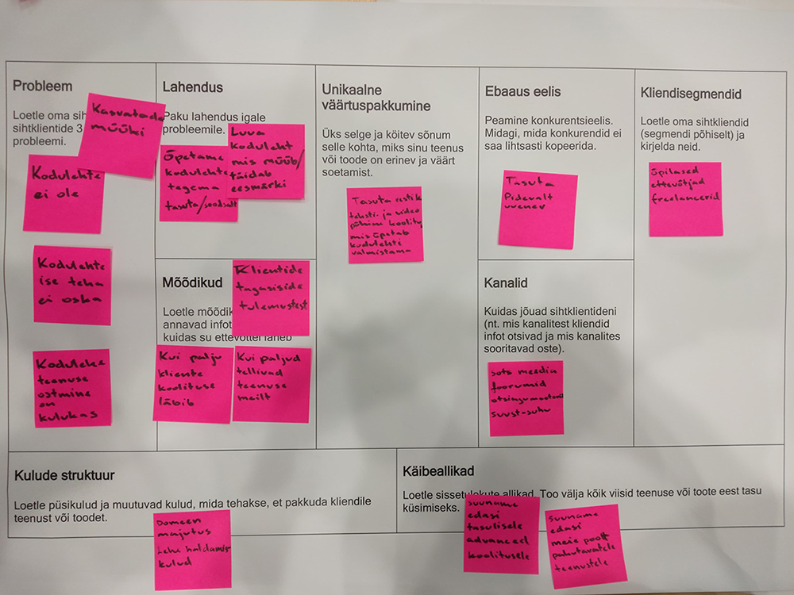

Tootearenduse aines oli ülesandeks luua grupitööna multimeedia toode. Töö algaski idee genereerimisega. Kuna olime seda mõtet juba varem mõlgutanud, valisime oma grupiga arendatavaks tooteks video- ja tekstipõhise koolituse, mis õpetab tegema kodulehti WordPressiga.
Seejärel hakkasime mõtlema milline peaks toode välja nägema, kellele on see suunatud, kuidas seda ellu viia jms. Samuti panime ka paika tiimisisesed rollid, mis hiljem küll mingil määral muutusid. Koostasime tiimilepingu, persoona ning väärtuspakkumise lõuendi. Mõtteharjutusena täitsime töölehti ka disainmõtlemise ja segmenteerimisnäitajate kohta.
Idee valideerimiseks viisime läbi ka küsitluse KHK õpilaste seas. Küsitletavateks olid õpilased erialadelt, kust võib tõenäoliselt tulla palju väikeettevõtjaid. Just väikeettevõtjad olid meie peamiseks sihtgrupiks. Küsitluse tulemusi saab näha siit.
Lisaks tavapärastele koolitundidele osalesime oma õppegrupiga ka kahepäevasel KHK Häckatonil kus jätkasime sama idee arendamist. Esitlesime oma ideed, koostasime ärilõuendi, saime mentoritelt tagasisidet, koostasime ja esitasime liftikõne ning saime üleüldse laheda kogemuse.
Vaatasime ka millist ettevõtlusvormi oma idee puhul kõige õigem rakendada oleks. Valituks sai osaühing. Uurisime kuidas ettevõtet asutada ja mida selleks vaja on. Meie vastuseid nendele küsimustele leiab siit.
Kuna suur osa õppest toimus e-õppena, tegimegi suurema osa kodust. Tegutsesime peamiselt iseseisvalt ning koostasime vajalikku teksti- ja pildimaterjali ning videoid. Aeg-ajalt tegime ka grupivestlusi Google Meet keskkonnas. Aine lõpuks valmis toimiv prototüüp mida saab näha siit.